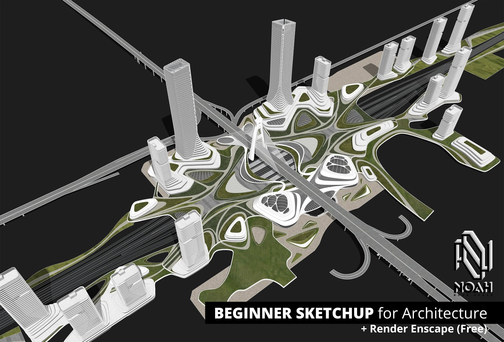

Welcome to my personal portfolio showcasing expertise in BIM, 3D modeling, Visualization 3D, structural coordination, and digital construction workflows.
Creating detailed 3D models and managing data classification across complex architectural and structural workflows.
Static, high-detail images showing specific indoor or outdoor angles with realistic textures and lighting.
Model checking, clash detection, and Information Takeoff (ITO) for optimized project delivery.
